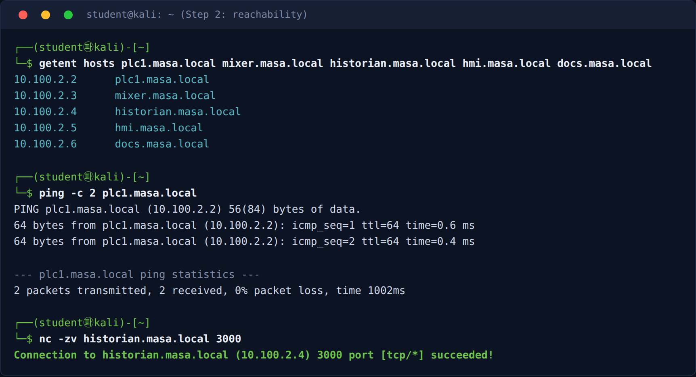
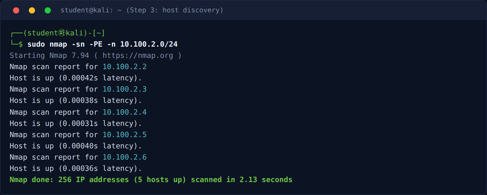
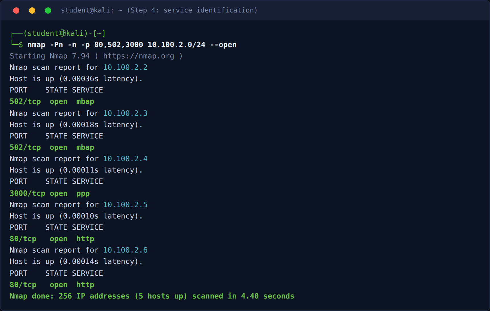
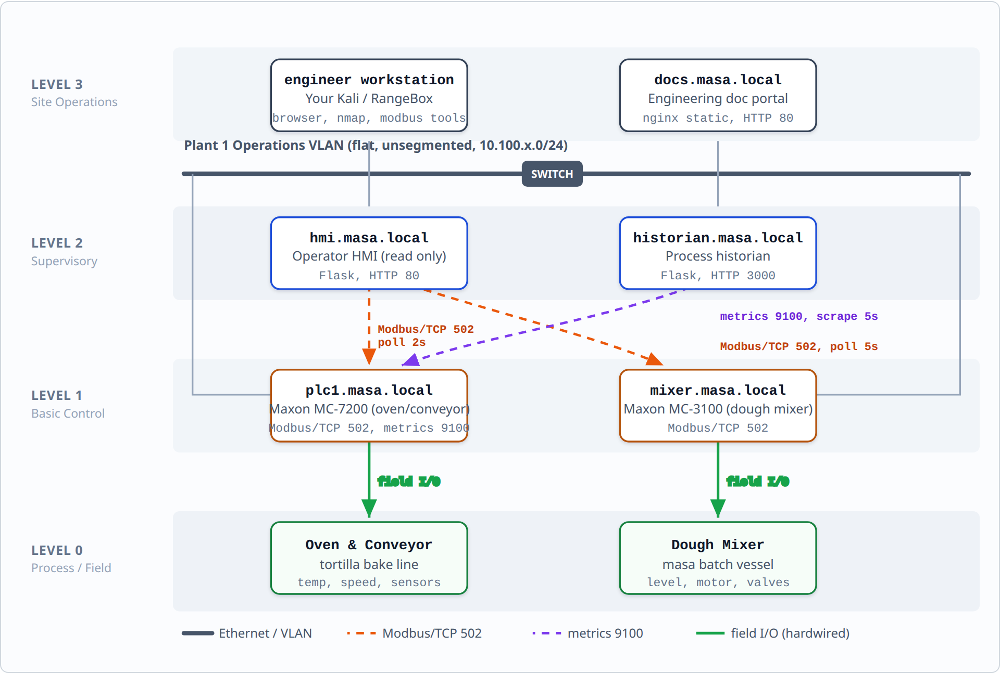
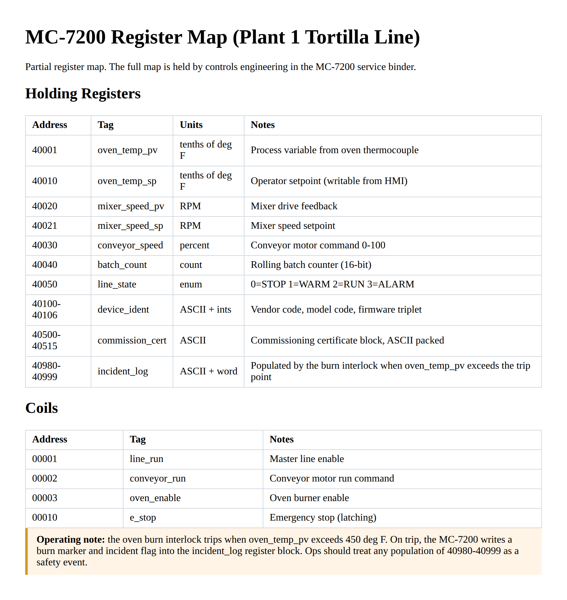
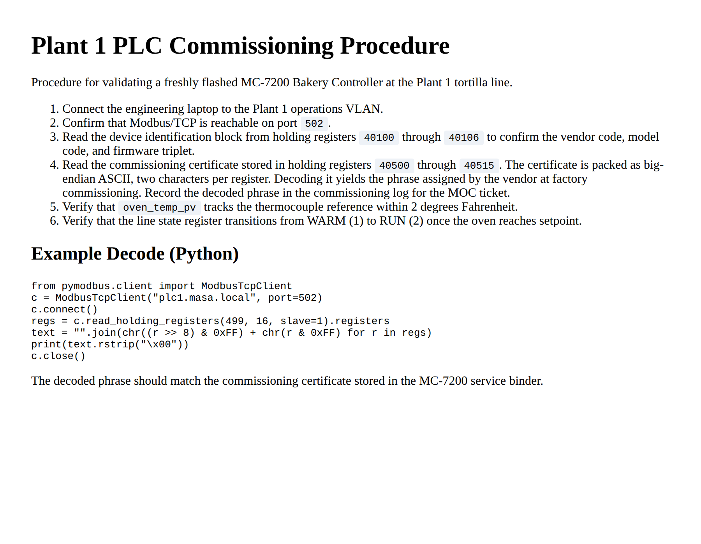
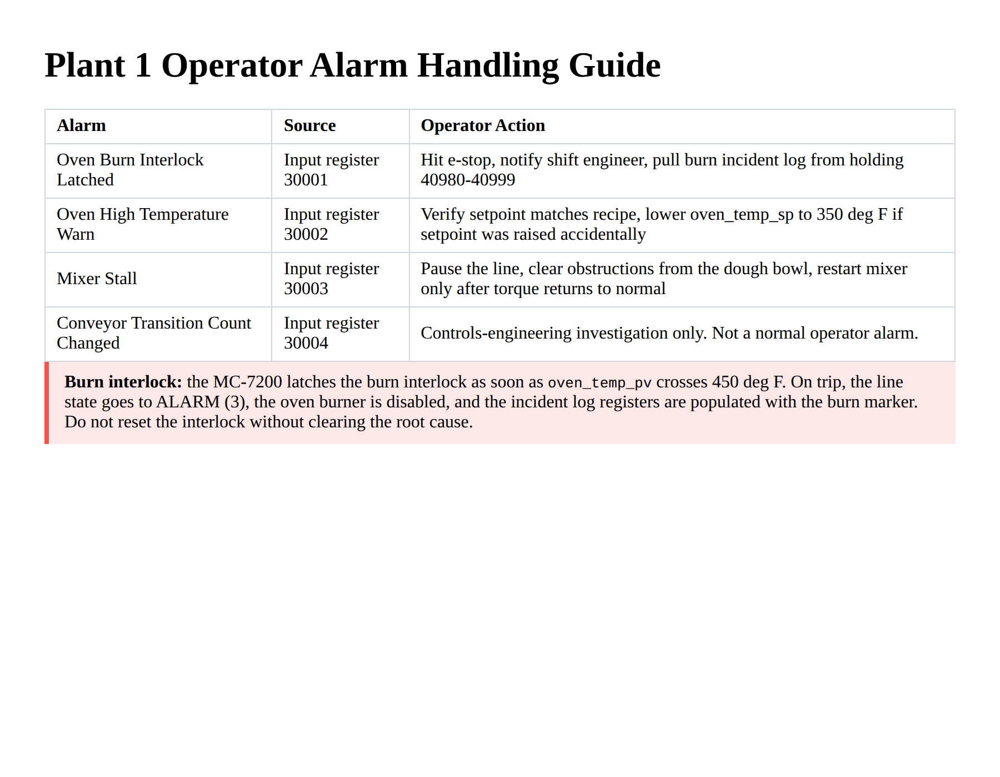
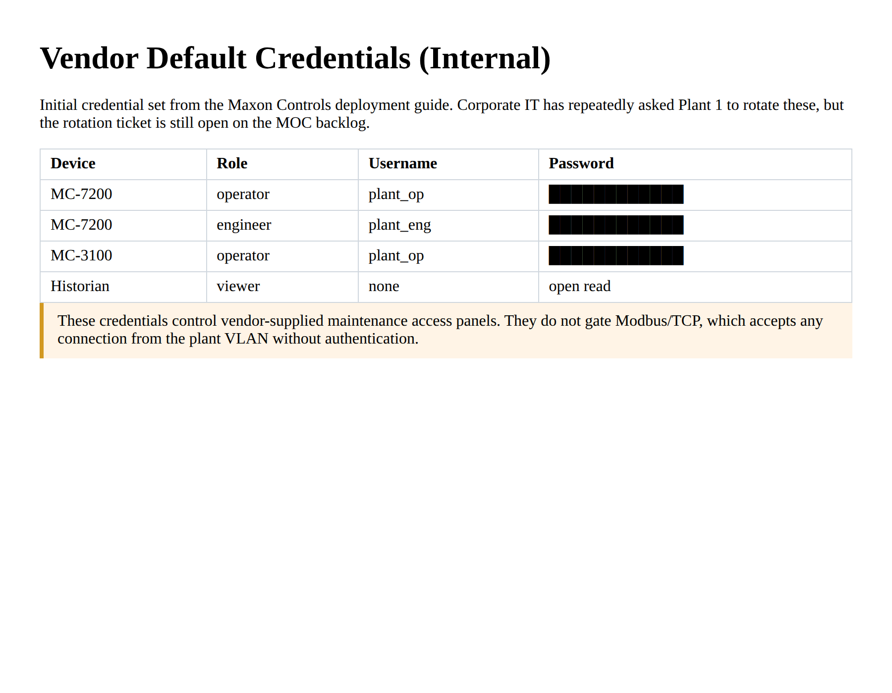
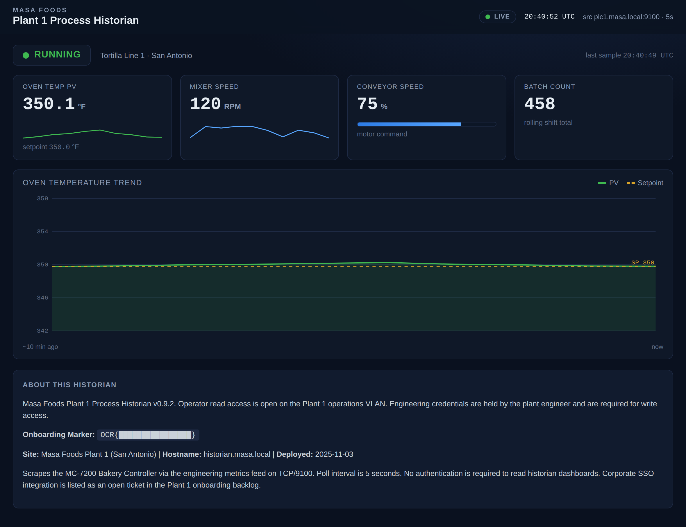

Exercise ICSPT-1.1: Touring Masa Foods
Engagement Status
| Client | Masa Foods, Inc. (fictional) |
|---|---|
| Role | OT Security Engineer, Plant 1 |
| Phase | Discovery Enumeration Exploitation Reporting |
What you know so far: Corporate IT handed you a VPN account and a one-sentence briefing: "the plants are a mess, figure them out." Plant 1 in San Antonio runs a tortilla production line. You have no prior ICS experience, and the plant engineer has asked you to stay read-only for the entire first week.
Before You Begin: Your Environment
Populate /etc/hosts with Plant 1 Targets
After the lab transitions to Running, the Exercise Network panel on the track page lists every Plant 1 target with its IP. Copy those IPs into /etc/hosts so the walkthrough commands work by name:
Kali (one-time per session)
# Replace these IPs with yours from the Exercise Network panel.
# The last octet is fixed: .2 plc1, .3 mixer, .4 historian, .5 hmi, .6 docs.
sudo tee -a /etc/hosts <<'HOSTS'
10.100.42.2 plc1.masa.local
10.100.42.3 mixer.masa.local
10.100.42.4 historian.masa.local
10.100.42.5 hmi.masa.local
10.100.42.6 docs.masa.local
HOSTS
Confirm with a quick ping:
A reply proves name resolution and network reachability. If the ping hangs, the lab is not Running yet.
Always Pass -n to Nmap
Every nmap command in the ICSPT workbooks includes -n to skip reverse DNS. Without it, nmap's async resolver may return Docker-internal container names instead of the friendly hostnames. Add -n to every ad-hoc nmap you run on an OCR lab.
Scenario
Masa Foods runs three sites. Plant 1 is the tortilla production line in San Antonio and is the only site you are scoped to this week. Reyna Alvarado, the Plant 1 engineer, gave you operator HMI credentials (username plant_op, password masa_op_2025) and pointed you at the internal documentation portal at docs.masa.local. Your assignment is to walk the plant network end to end and build a Purdue-model picture of every reachable asset. You will not touch any PLC in this exercise.
Why this matters
A first-day walkthrough is the only time an OT security engineer gets an unbiased view of a plant. Once operations knows you are testing, they start adapting: they coordinate their shifts around your windows, they quiet down alarm noise you would have noticed, they mentally filter the one weird thing that was going on when you arrived. A quiet reconnaissance pass on day one gives you the baseline that every subsequent decision is measured against.
Concretely, this exercise gives Reyna three things she does not currently have: an asset inventory she can hand to corporate IT for the quarterly risk review, a Purdue-level diagram she can use to justify segmentation budget, and a written record of which services are reachable from the operations VLAN before anything has been changed. Without that baseline, she cannot scope a single future engagement, triage a single future alert, or answer a single audit question about Plant 1. The onboarding marker you pull at the end is only a flag; the map you draw on the way there is the real deliverable.
The historian at historian.masa.local port 3000 publishes an onboarding marker in its About panel. Pull that marker as your flag. It confirms your tour was complete.
| Credentials in scope | Username | Password | Where it is used |
|---|---|---|---|
| Operator HMI account | plant_op |
masa_op_2025 |
Read-only HMI dashboard login (not exercised here) |
Objectives
- Populate
/etc/hostson your Kali so the Plant 1 friendly names resolve - Prove that your Kali is attached to the Plant 1 network with
pingandnc - Identify every host reachable on the Plant 1 operations subnet
- Map each host to a Purdue model level (0 through 3)
- Determine the protocol and role of each host without writing to any PLC
- Read the onboarding marker from the historian dashboard About panel
| Detail | Value |
|---|---|
| Difficulty | Beginner |
| Estimated Time | 35 to 60 minutes |
| Prerequisites | Basic command-line familiarity, TCP/IP fundamentals |
| Flag | Source | Found? |
|---|---|---|
OCR{...} |
Historian About panel |
Background: The Purdue Reference Model
The Purdue Enterprise Reference Architecture is the default mental model for thinking about ICS networks. It splits an industrial environment into six layers stacked from physical instrumentation at the bottom up to enterprise IT at the top.
| Level | Name | Typical Assets |
|---|---|---|
| 0 | Physical process | Sensors, actuators, motors, valves, heaters |
| 1 | Basic control | PLCs, RTUs, safety controllers |
| 2 | Supervisory control | HMIs, local SCADA servers |
| 3 | Operations | Historians, engineering workstations, batch management |
| 3.5 | IT/OT DMZ | Jump hosts, data diodes, remote access gateways |
| 4 | Enterprise IT | File shares, email, ERP |
| 5 | Corporate / Internet | VPN, external services |
In Plant 1, you expect to find a tortilla PLC and a mixer PLC at Level 1, an operator HMI at Level 2, and a historian plus an engineering documentation portal at Level 3. There is no DMZ and no formal segmentation. Corporate IT confirmed in writing that the plant operations VLAN is bridged directly onto the site office network. Your first deliverable to Reyna will surface exactly that weakness.
IT vs OT priorities
The CIA triad (Confidentiality, Integrity, Availability) is the IT security default. OT security flips the order to AIC: Availability first, Integrity second, Confidentiality last. Losing a historian read for ten minutes is a minor nuisance. Losing a running PLC for ten minutes stops the tortilla line and ruins a batch.
Tools You Will Need
Every command in this walkthrough runs from whichever Kali you picked in the Before-You-Begin section (your own VPN-connected Kali, or the browser-mounted RangeBox). All four tools below are standard on any Kali install.
| Tool | Purpose | Install Check |
|---|---|---|
nmap |
Host discovery | nmap --version |
curl |
HTTP fetch | curl --version |
nc (netcat) |
TCP reachability probe | nc -h 2>&1 \| head -1 |
| Web browser | Viewing the HMI and historian dashboards | Firefox, Chromium, or whatever your Kali ships with |
The target side of Plant 1 is a set of PLC simulators and web dashboards, not interactive hosts, so there are no commands to run on the target.
Walkthrough
Step 1: Populate /etc/hosts With the Plant 1 Targets
If you have not done this for the current session, copy the five Plant 1 IPs from the Exercise Network panel into /etc/hosts using the block shown in the "How to Name Your Plant 1 Targets" section above. Every later command in this workbook, and every other ICSPT exercise in this track, calls targets by their friendly hostnames and relies on that /etc/hosts entry (or Docker DNS on the RangeBox path) to resolve them.
When you are done, confirm the names resolve to the IPs shown on the panel:
Kali
Expected output
10.100.42.2 plc1.masa.local
10.100.42.3 mixer.masa.local
10.100.42.4 historian.masa.local
10.100.42.5 hmi.masa.local
10.100.42.6 docs.masa.local
/etc/hosts edit; if they are all missing, the lab is not Running yet.
Step 2: Prove the Lab Is Reachable
Before you scan, confirm that your Kali can actually reach Plant 1. A single ICMP ping and two TCP probes tell you in three seconds whether the lab is wired correctly.
Expected output
PING plc1.masa.local (10.100.42.2) 56(84) bytes of data.
64 bytes from plc1.masa.local (10.100.42.2): icmp_seq=1 ttl=64 time=0.9 ms
64 bytes from plc1.masa.local (10.100.42.2): icmp_seq=2 ttl=64 time=0.3 ms
Connection to historian.masa.local 3000 port [tcp/*] succeeded!
Connection to plc1.masa.local 502 port [tcp/*] succeeded!
succeeded! messages mean your Kali is on the Plant 1 network. If the ping hangs or nc reports No route to host, stop and recheck your setup: on the VPN path, verify sudo wg show ocr-vpn reports an active peer; on the RangeBox path, verify both the RangeBox and the exercise show Running on the Dashboard and the track page.
If the scan in Step 3 returns nothing, Step 2 is almost always the real failure
The single most common mistake for a new ICSPT student is running nmap before your Kali has been wired into the lab network. If any of the three commands above fails, do not continue. Fix the connectivity first: on VPN, bring the tunnel down and back up (sudo wg-quick down ocr-vpn && sudo wg-quick up ocr-vpn). On RangeBox, close the RangeBox tab and relaunch it from the Dashboard. Then retry Step 3 until all three probes succeed.

/etc/hosts, plc1 answers ping, and the nc probes report succeeded!. If you see this, your Kali is on the Plant 1 network and clear to scan.Step 3: Host Discovery Without Port Scans
On OT networks, aggressive scanning can knock older PLCs offline. Start with ICMP and ARP discovery only. -sn disables port scanning entirely; -PE forces an ICMP echo request; -n skips reverse-DNS lookups to keep the scan quiet.
Nmap needs a subnet, not a hostname, for a sweep. Read your /24 CIDR directly from the Exercise Network panel on the track page (for example 10.100.42.0/24) and paste it into the command.
Kali
Expected output
# Nmap 7.94 scan initiated ...
Host: 10.100.42.2 () Status: Up
Host: 10.100.42.3 () Status: Up
Host: 10.100.42.4 () Status: Up
Host: 10.100.42.5 () Status: Up
Host: 10.100.42.6 () Status: Up
# Nmap done ...
.50 or above) because nmap pings itself successfully. Ignore your own entry. If you are on the VPN path, you will see only the five Plant 1 targets because the VPN tunnel does not make your local Kali look like a host on the lab subnet.
Aggressive scans are not safe on real plants
An nmap -sS -p- -T5 sweep on a fielded PLC can cause a controller watchdog reset or a process fault. The OCR simulators tolerate aggressive scans, but you should train your fingers to run gentle discovery first so the habit carries to the field.

-sn sweep. Five hosts at offsets .2 through .6 report up, with no ports touched. On the RangeBox path your own IP may also appear at a higher offset; ignore it.Step 4: Gentle Service Identification
Once you know which hosts are up, probe only the ports you expect to see. Modbus/TCP is port 502. HTTP dashboards are port 80 and port 3000. Use -Pn because you already confirmed liveness in Step 3.
Kali
Expected output
Host: 10.100.42.2 () Ports: 80/closed/tcp//http///, 502/open/tcp//mbap///, 3000/closed/tcp//ppp///
Host: 10.100.42.3 () Ports: 80/closed/tcp//http///, 502/open/tcp//mbap///, 3000/closed/tcp//ppp///
Host: 10.100.42.4 () Ports: 80/closed/tcp//http///, 502/closed/tcp//mbap///, 3000/open/tcp//ppp///
Host: 10.100.42.5 () Ports: 80/open/tcp//http///, 502/closed/tcp//mbap///, 3000/closed/tcp//ppp///
Host: 10.100.42.6 () Ports: 80/open/tcp//http///, 502/closed/tcp//mbap///, 3000/closed/tcp//ppp///
/etc/hosts entries and you can see which hostname plays which role: plc1 and mixer are the PLCs, historian is the dashboard, hmi and docs are the web services.

502, the historian on 3000, and the HMI and docs portal on 80. That offset-to-role mapping is exactly what you record in Step 7.Step 5: Read the Engineering Docs Portal
Open a browser tab to http://docs.masa.local/ from your Kali. The index page lists five documents. Read at minimum the Network Diagram and the MC-7200 Register Map before moving on.
Open the Plant 1 Network Diagram. It maps every asset to its Purdue level and shows how the HMI and historian poll the two PLCs over Modbus, all on one flat operations VLAN.

The portal holds four more documents that you lean on throughout the Masa Foods track. Here is what each one looks like so you know what to expect when you open it.




Expected output
You now have an authoritative asset list direct from Plant 1 engineering, including the two PLC vendors, the HMI polling intervals, and a list of known weaknesses. Record the findings in the table below.
Step 6: Explore the Historian and Read the Onboarding Marker
Touring a plant means looking at its live process data, and the natural last stop on Plant 1 is the process historian. Open a browser tab to http://historian.masa.local:3000/. No login is required, because operator read access is open on the plant VLAN.
The dashboard shows the tortilla line in real time: oven temperature against its setpoint, the line state, mixer and conveyor speeds, the rolling batch count, and a live oven-temperature trend. It refreshes every couple of seconds as the historian scrapes the MC-7200 over the metrics feed.

Scroll to the About This Historian panel at the bottom of the page. Alongside the version and deployment details, it lists an Onboarding Marker. That marker is your flag for this exercise: copy the OCR{...} value and submit it in the OCR platform.
Extra observation
Open http://historian.masa.local:3000/api/info in your browser. The JSON response confirms the historian hostname, the scrape interval, and the PLC host it is polling. You will need all three of those facts in the independent exercise next.
Step 7: Record Your Findings
Fill in the table below and submit the flag.
Discovered hosts:
Host Purdue Level Protocol Role plc1.masa.local mixer.masa.local hmi.masa.local historian.masa.local docs.masa.local The flag is the onboarding marker shown in the About This Historian panel at the bottom of the historian dashboard (
http://historian.masa.local:3000/). Submit it exactly as it appears there, including theOCR{...}wrapper.Flag:
OCR{________________}
Output Interpretation
- Two hosts answer on Modbus/TCP (port 502), which confirms you have at least two PLCs
- The historian on port 3000 is the only HTTP service on a non-standard port, which is a strong hint that it is not an operator tool but an engineering tool
- The docs portal uses nginx
autoindex on, which you confirmed in the Step 5 curl call. Directory listing is a configuration smell that would never pass an IT audit but is common in plants where engineers want quick file access - The Plant 1 HMI polls
plc1.masa.localevery 2 seconds (see network.html). Real HMIs poll in the 1 to 5 second range for legacy installations; anything under 500 ms usually indicates a modern SCADA platform
Analysis Questions
1. Why should you run nmap -sn -PE before any port scan on an OT network?
Reveal answer
Older PLCs can reboot, lock up, or trip safety logic when aggressive TCP or UDP scans hit them. ICMP and ARP discovery (-sn -PE) uses one or two packets per host and carries essentially zero risk. You confirm liveness cheaply, then target only the ports you actually expect. The best practice in real engagements is to also timebox the scan and coordinate with operations so the shift supervisor knows a security tool is on the wire.
2. The Plant 1 HMI, historian, and docs portal are all reachable from the same attacker host. What Purdue model principle does that violate?
Reveal answer
Plant 1 has no segmentation between operations (Level 3) and control (Level 1). A proper Purdue design places a firewall or data diode between Level 2/3 and Level 1, with an IT/OT DMZ at Level 3.5. In Plant 1 the attacker reaches the PLCs with the same ARP scope as the historian, which is the core security gap you were hired to fix.
3. The historian publishes an "onboarding marker" string in plain text. Is that a security control?
Reveal answer
It is not. A marker that any host on the operations VLAN can read without authentication is a convention, not a control. Treat it as unauthenticated telemetry. Real plant dashboards leak tag names, setpoints, alarm limits, and sometimes credential hints the same way.
4. Reyna said "the old mixer PLC reboots if you look at it funny." What does that tell you about your Week 2 plans?
Reveal answer
Older Modbus controllers are famous for crashing on malformed packets, unexpected function codes, or back-to-back requests without delay. You should default to pymodbus (a well-formed client), use function code 3 (read) only for the mixer, add a sleep between requests, and avoid NSE scripts that probe non-standard function codes.
Key Takeaways
- OCR gives you two attacker-host options: your own Kali over WireGuard VPN, or the browser-mounted RangeBox. Pick one per session and stick with it
- The Exercise Network panel on the OCR track page lists every target IP with a friendly label. Copy those IPs into
/etc/hostsonce per session so both paths can call the targets by their real names - The walkthrough uses
plc1.masa.local,historian.masa.local,docs.masa.local, and the other friendly names uniformly. On the RangeBox they also resolve through Docker DNS, which means the/etc/hostsentries are redundant but harmless - Always verify reachability with
pingplusnc -zvbefore you scan. Most "nmap returned nothing" failures are actually "the attacker host is not on the lab network yet" /tmpis ephemeral scratch space on your attacker host. Nmap's-oGformat is the easiest to re-parse later- Gentle discovery first:
-sn -PE -nover the subnet, then targeted-Pn -p <ports>only on the services you expect - Engineering documentation portals are often unauthenticated and contain high-value information
- Unauthenticated dashboards and plaintext markers are operational conventions, not security controls
- Read-only reconnaissance is the only activity allowed in Week 1; write operations start in Week 5